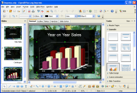

 IMPRESS è uno strumento veramente eccezionale per creare presentazioni multimediali efficaci. Le vostre presentazioni si distingueranno grazie alla clip art 2D e 3D, gli effetti di animazione, l'animazione e gli strumenti di disegno ad alto impatto.
Le Pagine master semplificano il compito di preparare il materiale.
Sono supportate una gamma completa di visualizzazioni: Disegno / Contorno / Slide / Annotazioni / Ordine diapositive, per soddisfare ogni esigenza degli autori della presentazione e del pubblico, oltre alla possibilità di una visualizzazione multi-area per avere a portata di mano tutti gli strumenti.
IMPRESS ha una gamma completa di disegni facili da usare e strumenti per creare diagrammi, per rendere interessante la vostra presentazione.
Parcheggiate' gli strumenti da disegno più comunemente usati, sul vostro schermo, ed attivateli con un singolo clic.
L'animazione e gli effetti animati rendono viva la vostra presentazione. Fontwork permette di creare sbalorditive immagini 2D e 3D, dal testo. Create immagini realistiche in 3D con incredibile velocità e resa.
Salvate i vostri documenti nel formato OpenDocument, lo standard internazionale per i documenti di ufficio. Questo formato, basato su XML, è uno standard aperto: ciò significa che non siete legati a IMPRESS. Potete aprire i vostri documenti con qualsiasi programma compatibile con OpenDocument.
Con IMPRESS, inoltre, potete leggere tutti i vostri precedenti documenti Microsoft PowerPoint (compresi quelli creati con Microsoft PowerPoint 2007) e salvare il vostro lavoro nei formati Microsoft PowerPoint per inviarli a chi è ancora legato ai prodotti Microsoft. In alternativa, utilizzate la capacità integrata di IMPRESS di creare versioni Flash (. Swf) delle vostre presentazioni.
Traduzione a cura dei volontari del progetto localizzazione.
{kind=link}